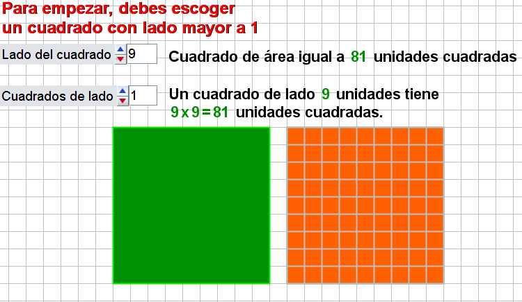

-
Descripción: Escena interactiva realizada con Descartes en la que se pueden construir dos cuadrados de hasta diez unidades de longitud, con la posibilidad de dividir el área del segundo cuadrado, en unidades cuadradas más pequeñas.
-
Utilidad: Sirve para introducir conceptos relacionados con el área del cuadrado, las relaciones entre cuadrados y afianzar la idea de múltiplo y divisor.
|

|